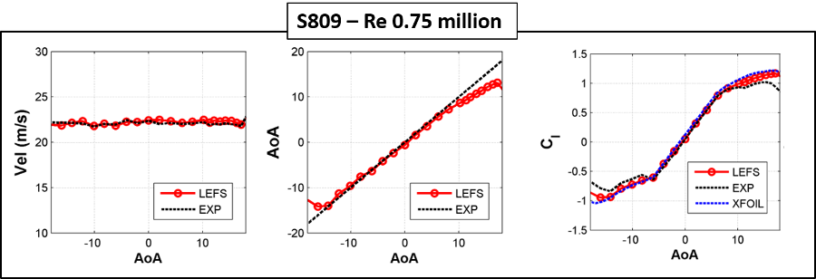
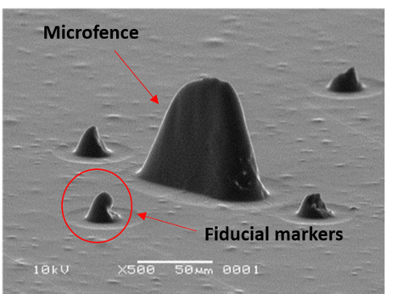
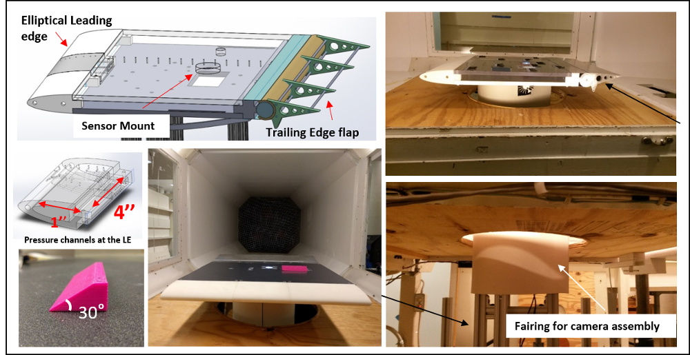

The identification of inflow air data
quantities such as airspeed, angle of attack, and local lift coefficient on various sections of a wing or rotor blade provides the capability for load monitoring, aerodynamic diagnostics, and control on devices ranging from air vehicles to wind turbines.
In this research, a novel leading-edge flow sensing (LEFS) algorithm was developed for the determination of the air data parameters using surface pressures measured at a few ports in the vicinity of the leading edge of awing/blade section.
Real-time determination of the section operating condition can be used to effectively adapt wing geometry using cruise flap or other geometry changes. Apart from routine
aircraft operations, this information could be useful in wind tunnel or
flight tests of prototype configurations for deducing the
aerodynamic causes behind flight behaviors.
The LEFS algorithm is successful in predicting the aerodynamic operating state variables such as angle of attack, airspeed, stagnation-point location, and local lift coefficient on wing/rotor blade sections using just five leading-edge pressure measurements.
The effectiveness of the LEFS technique has been assessed by testing the algorithm on wind tunnel data for steady flow and rotating blade data, obtained from test campaigns conducted by NREL. (Some results for S809 airfoil shown below).

APPLICATIONS
The application of the LEFS technique has been investigated for the following flow scenarios :
Flow-field sensing on the horizontal
tail from a few surface pressure measurements
can be used to detect the loss of longitudinal stability of
the tail in the wing wake and allow real-time estimates
of the control surface performance.
Preliminary wind tunnel tests have been conducted in the NC State subsonic wind tunnel by applying the algorithm to an airfoil model in the wake of a cylindrical body placed upstream.
Unsteady Aerodynamics
Unsteady flow on airfoils is often characterized by leading-edge-vortex (LEV) formation.
The shedding, growth, and detachment of LEV strongly affect the forces and moments on the airfoil.
The suction coefficient (Cs) estimated by the LEFS technique (using just 5 pressure inputs in the vicinity of the leading edge and
without any prior calibration) has been successful in detecting surface signatures for leading edge vortex formation, growth, and detachment.
In the following video, the minimum Cs values mark the onset of vortex formation and maximum values correspond to vortex pinch-off. The Cs determined by the LEFS method compares well with the CFD data.
A non-dimensional parameter that is a measure of suction/velocity at the leading edge is called a leading-edge suction parameter (LESP), denoted by L , can also be deduced from the LEFS algorithm.
Set to be equal to the A0 Fourier coefficient from unsteady thin-airfoil theory, research has shown that there is a critical value of LESP for a given airfoil and Reynolds number above which LEV formation is initiated regardless of motion kinematic parameters.
Based on observations made in this work, the LEFS algorithm demonstrated the potential to be used as an effective tool to sense whether or not an airfoil undergoing an unsteady motion evinces LEV shedding or massive trailing-edge flow separation.
Another output of the LEFS algorithm is termed as "A", which has a strong connection with the suction peak. In the LEV shedding case, the instantaneous L and A predictions from the LEFS algorithm can be used to sense flow events in the unsteady vortex shedding process, and, in the massive trailing-edge flow separation case, the time instants of leading-edge flow separation and reattachment.
For a given airfoil and Reynolds number, the sensing tool will be calibrated for the L crit and Acrit values using CFD/experimental results for a single moderate-K unsteady motion.
The Acrit value can also be calibrated using steady data for the airfoil-Reynolds number combination. Once calibrated for a motion that evinces LEV shedding, the flow events associated with unsteady vortex shedding can be determined in the manner illustrated in the following figure.
Aerodynamic Flow Sensing with Elastic Microfence Structures

Bio-inspired artificial hair sensors have the potential to develop a new class of techniques for controlling aerial systems.
The mechanical response of microstructures can potentially be incorporated
in the feedback loop while designing control schemes to achieve enhanced
flight performance similar to natural fliers - especially in MAVs where conventional sensors demand too much power and space and may not have
the fidelity for aerodynamic control feedback.
In this work, elastic
microfence structures were generated and tested under different flow conditions on a
flat plate setup. The microfences were fabricated by our collaborators at NASA Langley Research Center and the response of the microfences was studied by subjecting the sensing elements to different flow conditions in the NCSU subsonic wind tunnel. The response of the microfences was recorded via optical microscopy.
Image stabilization
Wind tunnel facilities are prone to vibrations.
Although measures were taken in designing the current experimental setup to
minimize any mechanical vibrations,
flow-induced vibrations were still prevalent during
the experimentation.
The vibrations result in relative motion between the camera setup and microfence
structures which makes the measurement of microfence tip deflection a challenging task.
Intensity-based image registration technique (from Image processing toolbox in MATLAB) was used to
transform the video frames and correct the relative motion induced in the video due to
vibration.
Wind Tunnel Tests
To evaluate the response of the elastic microfence structures, the sensing elements were installed on a flat plate model and subjected to real flow conditions in the subsonic wind tunnel at North Carolina State University (NCSU).
A (0.66 m chord) flat plate model with an elliptical leading edge was fabricated.
There were integral pressure taps in the 3D printed leading edge and in the upper surface of the acrylic
at plate.
The model also had a trailing edge flap that could be adjusted to control the stagnation point at the leading edge of the model.

Detection of Reversed Flow
A test case was designed to characterize the response of the microfence structures under reverse
flow conditions.
The objective was to initially subject the sensors to forward
flow and subsequently create flow reversal at the location of the microstructures to analyze their response.
The change in
flow direction was achieved by placing a bluff body in front of the microstructures. A 3D printed wedge shaped body
was fabricated and installed on the at plate using a linear actuator setup.
The following video shows the microfence response at 4 critical states as shown below. (The direction of freestream
velocity is from left to right).